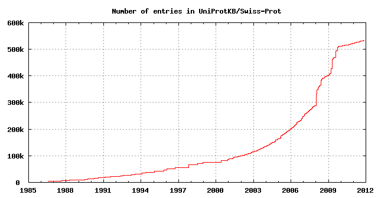
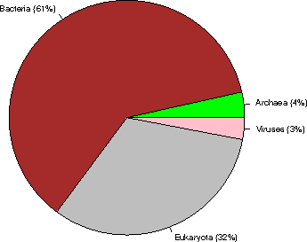
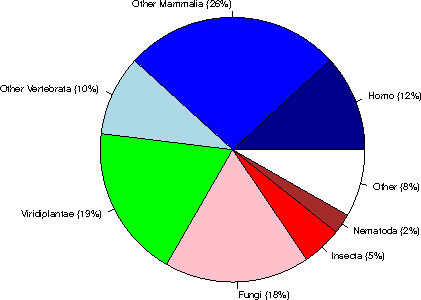
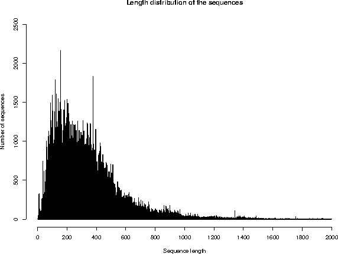

UniProtKB/Swiss-Prot protein knowledgebase release 2011_11 statistics
1. INTRODUCTION
Release 2011_11 of 16-Nov-11 of UniProtKB/Swiss-Prot contains 533049 sequence entries,
comprising 189064225 amino acids abstracted from 204109 references.
269 sequences have been added since release 2011_10, the sequence data of
170 existing entries has been updated and the annotations of
383712 entries have been revised.
Number of fragments: 8930
Number of additional sequences produced by alternative splicing, initiation or promoter usage, or ribosomal frameshifting: 30800
Protein existence (PE): entries %
1: Evidence at protein level 73298 13.8%
2: Evidence at transcript level 69925 13.1%
3: Inferred from homology 373485 70.1%
4: Predicted 14452 2.7%
5: Uncertain 1889 0.4%
The growth of the database is summarized below.

2. TAXONOMIC ORIGIN
Total number of species represented in this release of UniProtKB/Swiss-Prot: 12636
The first twenty species represent 110918 sequences: 20.8 % of the total
number of entries.
2.1 Table of the frequency of occurrence of species
Species represented 1x: 5319
2x: 1843
3x: 959
4x: 632
5x: 456
6x: 365
7x: 264
8x: 215
9x: 193
10x: 109
11- 20x: 647
21- 50x: 388
51-100x: 210
>100x: 1036
2.2 Table of the most represented species
------ --------- --------------------------------------------
Number Frequency Species
------ --------- --------------------------------------------
1 20251 Homo sapiens (Human)
2 16403 Mus musculus (Mouse)
3 10835 Arabidopsis thaliana (Mouse-ear cress)
4 7664 Rattus norvegicus (Rat)
5 6620 Saccharomyces cerevisiae (strain ATCC 204508 / S288c) (Baker's yeast)
6 5872 Bos taurus (Bovine)
7 4976 Schizosaccharomyces pombe (strain 972 / ATCC 24843) (Fission yeast)
8 4430 Escherichia coli (strain K12)
9 4244 Bacillus subtilis
10 4121 Dictyostelium discoideum (Slime mold)
11 3337 Caenorhabditis elegans
12 3324 Xenopus laevis (African clawed frog)
13 3131 Drosophila melanogaster (Fruit fly)
14 2816 Oryza sativa subsp. japonica (Rice)
15 2764 Danio rerio (Zebrafish) (Brachydanio rerio)
16 2220 Gallus gallus (Chicken)
17 2215 Pongo abelii (Sumatran orangutan)
18 2009 Escherichia coli O157:H7
19 1896 Mycobacterium tuberculosis
20 1790 Salmonella typhimurium
21 1787 Methanocaldococcus jannaschii
22 1707 Haemophilus influenzae (strain ATCC 51907 / DSM 11121 / KW20 / Rd)
23 1677 Shigella flexneri
24 1674 Escherichia coli O6
25 1610 Xenopus tropicalis (Western clawed frog) (Silurana tropicalis)
26 1407 Sus scrofa (Pig)
27 1345 Salmonella typhi
28 1244 Mycobacterium bovis
29 1217 Pseudomonas aeruginosa (strain ATCC 15692 / PAO1 / 1C / PRS 101 / LMG 12228)
30 1168 Macaca fascicularis (Crab-eating macaque) (Cynomolgus monkey)
31 1025 Synechocystis sp. (strain ATCC 27184 / PCC 6803 / N-1)
32 1005 Yersinia pestis
33 999 Archaeoglobus fulgidus
34 952 Vibrio cholerae
35 929 Salmonella paratyphi A
36 925 Ashbya gossypii (strain ATCC 10895 / CBS 109.51 / FGSC 9923 / NRRL Y-1056)
37 924 Staphylococcus aureus (strain N315)
38 923 Staphylococcus aureus (strain Mu50 / ATCC 700699)
39 909 Acanthamoeba polyphaga mimivirus (APMV)
40 903 Kluyveromyces lactis
41 898 Staphylococcus aureus (strain COL)
42 895 Staphylococcus aureus (strain MW2)
43 889 Staphylococcus aureus (strain MSSA476)
44 887 Escherichia coli O6:K15:H31 (strain 536 / UPEC)
45 887 Staphylococcus aureus (strain MRSA252)
46 884 Oryctolagus cuniculus (Rabbit)
47 882 Salmonella choleraesuis
48 878 Shigella sonnei (strain Ss046)
49 866 Rhizobium meliloti (strain 1021) (Ensifer meliloti) (Sinorhizobium meliloti)
50 864 Yersinia pseudotuberculosis
51 861 Candida glabrata
52 841 Escherichia coli O9:H4 (strain HS)
53 834 Escherichia coli O139:H28 (strain E24377A / ETEC)
54 828 Shigella boydii serotype 4 (strain Sb227)
55 823 Escherichia coli (strain UTI89 / UPEC)
56 819 Escherichia coli (strain ATCC 8739 / DSM 1576 / Crooks)
57 813 Shigella dysenteriae serotype 1 (strain Sd197)
58 812 Neurospora crassa
59 797 Canis familiaris (Dog) (Canis lupus familiaris)
60 795 Vibrio parahaemolyticus
61 791 Escherichia coli (strain SMS-3-5 / SECEC)
62 782 Erwinia carotovora subsp. atroseptica (Pectobacterium atrosepticum)
63 774 Aquifex aeolicus
64 772 Emericella nidulans (Aspergillus nidulans)
65 772 Pasteurella multocida (strain Pm70)
66 771 Escherichia coli (strain K12 / DH10B)
67 765 Escherichia coli (strain K12 / MC4100 / BW2952)
68 764 Escherichia coli O17:K52:H18 (strain UMN026 / ExPEC)
69 764 Escherichia coli O127:H6 (strain E2348/69 / EPEC)
70 762 Escherichia coli (strain 55989 / EAEC)
71 761 Escherichia coli O8 (strain IAI1)
72 759 Shigella flexneri serotype 5b (strain 8401)
73 759 Staphylococcus epidermidis (strain ATCC 35984 / RP62A)
74 756 Escherichia coli (strain SE11)
75 756 Streptomyces coelicolor
76 756 Staphylococcus epidermidis (strain ATCC 12228)
77 756 Escherichia coli O45:K1 (strain S88 / ExPEC)
78 753 Escherichia coli O7:K1 (strain IAI39 / ExPEC)
79 747 Escherichia coli O157:H7 (strain EC4115 / EHEC)
80 742 Photorhabdus luminescens subsp. laumondii (strain TT01)
81 734 Bacillus halodurans
82 733 Vibrio vulnificus
83 733 Yersinia enterocolitica serotype O:8 / biotype 1B (strain 8081)
84 731 Escherichia coli O81 (strain ED1a)
85 727 Bacillus anthracis
86 721 Salmonella enteritidis PT4 (strain P125109)
87 717 Staphylococcus aureus (strain NCTC 8325)
88 716 Vibrio vulnificus (strain YJ016)
89 716 Salmonella paratyphi B (strain ATCC BAA-1250 / SPB7)
90 714 Yersinia pestis bv. Antiqua (strain Nepal516)
91 714 Salmonella paratyphi A (strain AKU_12601)
92 713 Salmonella agona (strain SL483)
93 713 Escherichia coli O1:K1 / APEC
94 713 Yersinia pseudotuberculosis serotype O:1b (strain IP 31758)
95 712 Salmonella newport (strain SL254)
96 711 Enterobacter sp. (strain 638)
97 710 Salmonella heidelberg (strain SL476)
98 710 Klebsiella pneumoniae subsp. pneumoniae (strain ATCC 700721 / MGH 78578)
99 710 Yersinia pestis bv. Antiqua (strain Antiqua)
100 710 Salmonella schwarzengrund (strain CVM19633)
101 702 Salmonella dublin (strain CT_02021853)
102 698 Shigella boydii serotype 18 (strain CDC 3083-94 / BS512)
103 694 Escherichia fergusonii (strain ATCC 35469 / DSM 13698 / CDC 0568-73)
104 694 Klebsiella pneumoniae (strain 342)
105 687 Mycoplasma pneumoniae (strain ATCC 29342 / M129)
106 687 Nostoc sp. (strain PCC 7120 / UTEX 2576)
107 686 Pan troglodytes (Chimpanzee)
108 685 Zea mays (Maize)
109 683 Candida albicans (strain SC5314 / ATCC MYA-2876) (Yeast)
110 683 Salmonella gallinarum (strain 287/91 / NCTC 13346)
111 676 Citrobacter koseri (strain ATCC BAA-895 / CDC 4225-83 / SGSC4696)
112 675 Pseudomonas putida (strain KT2440)
113 675 Pseudomonas syringae pv. tomato (strain DC3000)
114 668 Mycobacterium leprae
115 667 Yersinia pestis (strain Pestoides F)
116 666 Staphylococcus aureus (strain USA300)
117 666 Serratia proteamaculans (strain 568)
118 658 Rhizobium sp. (strain NGR234)
119 653 Debaryomyces hansenii
120 652 Bradyrhizobium japonicum
121 643 Bacillus cereus (strain ATCC 14579 / DSM 31)
122 642 Staphylococcus aureus (strain bovine RF122 / ET3-1)
123 640 Escherichia coli
124 640 Salmonella arizonae (strain ATCC BAA-731 / CDC346-86 / RSK2980)
125 638 Yersinia pseudotuberculosis serotype O:3 (strain YPIII)
126 636 Yarrowia lipolytica (strain CLIB 122 / E 150) (Yeast) (Candida lipolytica)
127 633 Yersinia pseudotuberculosis serotype IB (strain PB1/+)
128 627 Agrobacterium tumefaciens (strain C58 / ATCC 33970)
129 625 Neosartorya fumigata (strain ATCC MYA-4609 / Af293 / CBS 101355 / FGSC A1100)
130 624 Shewanella oneidensis
131 619 Enterobacter sakazakii (strain ATCC BAA-894)
132 615 Treponema pallidum (strain Nichols)
133 611 Staphylococcus haemolyticus (strain JCSC1435)
134 606 Methanobacterium thermoautotrophicum (strain Delta H)
135 605 Rhizobium loti (strain MAFF303099) (Mesorhizobium loti)
136 602 Staphylococcus saprophyticus subsp. saprophyticus
137 601 Ralstonia solanacearum (strain GMI1000) (Pseudomonas solanacearum)
138 600 Yersinia pestis bv. Antiqua (strain Angola)
139 600 Salmonella paratyphi C (strain RKS4594)
140 600 Photobacterium profundum (Photobacterium sp. (strain SS9))
141 599 Listeria monocytogenes
142 595 Xanthomonas campestris pv. campestris
143 590 Bacillus cereus (strain ATCC 10987)
144 590 Listeria innocua
145 588 Helicobacter pylori (Campylobacter pylori)
146 588 Pectobacterium carotovorum subsp. carotovorum (strain PC1)
147 587 Oryza sativa subsp. indica (Rice)
148 585 Rickettsia prowazekii (strain Madrid E)
149 579 Neisseria meningitidis serogroup B
150 576 Brucella suis biovar 1 (strain 1330)
151 572 Brucella melitensis biotype 1 (strain 16M / ATCC 23456 / NCTC 10094)
152 572 Buchnera aphidicola subsp. Acyrthosiphon pisum (strain APS)
153 569 Bacillus thuringiensis subsp. konkukian
154 565 Helicobacter pylori J99 (Campylobacter pylori J99)
155 565 Pseudomonas syringae pv. syringae (strain B728a)
156 562 Bacillus licheniformis (strain DSM 13 / ATCC 14580)
157 562 Buchnera aphidicola subsp. Schizaphis graminum (strain Sg)
158 561 Caulobacter crescentus (Caulobacter vibrioides)
159 560 Bacillus cereus (strain ZK / E33L)
160 558 Pseudomonas aeruginosa (strain UCBPP-PA14)
161 556 Neisseria meningitidis serogroup A
162 556 Vibrio fischeri (strain ATCC 700601 / ES114)
163 556 Clostridium acetobutylicum
164 556 Xanthomonas axonopodis pv. citri (Citrus canker)
165 556 Caenorhabditis briggsae
166 552 Pseudomonas fluorescens (strain Pf0-1)
167 551 Oceanobacillus iheyensis (strain DSM 14371 / JCM 11309 / KCTC 3954 / HTE831)
168 545 Pseudomonas fluorescens (strain Pf-5 / ATCC BAA-477)
169 543 Pseudomonas syringae pv. phaseolicola (strain 1448A / Race 6)
170 530 Erwinia tasmaniensis (strain DSM 17950 / Et1/99)
171 529 Listeria monocytogenes serotype 4b (strain F2365)
172 528 Lactococcus lactis subsp. lactis (strain IL1403) (Streptococcus lactis)
173 526 Sodalis glossinidius (strain morsitans)
174 525 Streptococcus pneumoniae
175 522 Xylella fastidiosa
176 521 Bordetella bronchiseptica (Alcaligenes bronchisepticus)
177 518 Thermotoga maritima
178 514 Chromobacterium violaceum
179 512 Xylella fastidiosa (strain Temecula1 / ATCC 700964)
180 511 Pseudomonas aeruginosa (strain PA7)
181 511 Vibrio cholerae serotype O1 (strain ATCC 39541 / Ogawa 395 / O395)
182 509 Haemophilus ducreyi (strain 35000HP / ATCC 700724)
183 507 Bordetella parapertussis
184 507 Buchnera aphidicola subsp. Baizongia pistaciae (strain Bp)
185 507 Bordetella pertussis
186 507 Geobacillus kaustophilus
187 505 Staphylococcus aureus (strain Newman)
188 500 Deinococcus radiodurans
189 500 Pseudomonas entomophila (strain L48)
190 499 Brucella abortus biovar 1 (strain 9-941)
191 497 Rickettsia conorii (strain ATCC VR-613 / Malish 7)
192 496 Corynebacterium glutamicum (Brevibacterium flavum)
193 496 Bacillus clausii (strain KSM-K16)
194 494 Haemophilus influenzae (strain 86-028NP)
195 494 Streptomyces avermitilis
196 491 Bacillus amyloliquefaciens (strain FZB42)
197 491 Xanthomonas campestris pv. campestris (strain 8004)
198 490 Vibrio harveyi (strain ATCC BAA-1116 / BB120)
199 490 Clostridium perfringens
200 489 Burkholderia pseudomallei (Pseudomonas pseudomallei)
201 487 Shewanella sp. (strain MR-7)
202 486 Proteus mirabilis (strain HI4320)
203 485 Mannheimia succiniciproducens (strain MBEL55E)
204 484 Methanosarcina acetivorans (strain ATCC 35395 / DSM 2834 / JCM 12185 / C2A)
205 484 Pseudomonas aeruginosa (strain LESB58)
206 484 Staphylococcus aureus (strain Mu3 / ATCC 700698)
207 484 Shewanella sp. (strain MR-4)
208 483 Mycoplasma genitalium (strain ATCC 33530 / G-37 / NCTC 10195)
209 476 Acinetobacter sp. (strain ADP1)
210 476 Thermosynechococcus elongatus (strain BP-1)
211 476 Synechococcus elongatus (strain PCC 7942) (Anacystis nidulans R2)
212 474 Burkholderia sp. (strain 383) (Burkholderia cepacia
213 474 Pyrococcus horikoshii
214 474 Enterococcus faecalis (Streptococcus faecalis)
215 473 Pseudomonas putida (strain F1 / ATCC 700007)
216 473 Brucella abortus (strain 2308)
217 473 Aspergillus oryzae (strain ATCC 42149 / RIB 40)
218 466 Xanthomonas campestris pv. vesicatoria (strain 85-10)
219 466 Shewanella frigidimarina (strain NCIMB 400)
220 465 Pyrococcus abyssi (strain GE5 / Orsay)
221 465 Pseudomonas putida (strain GB-1)
222 464 Lactobacillus plantarum
223 463 Shewanella sp. (strain ANA-3)
224 463 Methanosarcina mazei
225 462 Aeromonas hydrophila subsp. hydrophila (strain ATCC 7966 / NCIB 9240)
226 462 Anabaena variabilis (strain ATCC 29413 / PCC 7937)
227 462 Cupriavidus necator (strain ATCC 17699 / H16 / DSM 428 / Stanier 337)
228 462 Rhodopseudomonas palustris (strain ATCC BAA-98 / CGA009)
229 462 Halobacterium salinarium (strain ATCC 700922 / JCM 11081 / NRC-1)
230 461 Burkholderia mallei (Pseudomonas mallei)
231 459 Streptococcus pneumoniae (strain ATCC BAA-255 / R6)
232 458 Cupriavidus pinatubonensis (strain JMP134 / LMG 1197) (Alcaligenes eutrophus)
233 455 Staphylococcus aureus (strain JH1)
234 454 Xanthomonas oryzae pv. oryzae (strain MAFF 311018)
235 453 Rickettsia felis (strain ATCC VR-1525 / URRWXCal2) (Rickettsia azadi)
236 452 Ovis aries (Sheep)
237 452 Shewanella baltica (strain OS185)
238 452 Pseudomonas putida (strain W619)
239 451 Methylococcus capsulatus (strain ATCC 33009 / NCIMB 11132 / Bath)
240 450 Streptococcus mutans
241 450 Rhodobacter sphaeroides (strain ATCC 17023 / 2.4.1 / NCIB 8253 / DSM 158)
242 449 Thermoanaerobacter tengcongensis
243 449 Staphylococcus aureus (strain JH9)
244 449 Aeromonas salmonicida (strain A449)
245 448 Mycobacterium paratuberculosis
246 448 Pyrococcus furiosus (strain ATCC 43587 / DSM 3638 / JCM 8422 / Vc1)
247 447 Vibrio fischeri (strain MJ11)
248 445 Hahella chejuensis (strain KCTC 2396)
249 445 Dechloromonas aromatica (strain RCB)
250 444 Nicotiana tabacum (Common tobacco)
2.3 Taxonomic distribution of the sequences

Kingdom sequences (% of the database)
Archaea 18677 ( 4%)
Bacteria 327043 ( 61%)
Eukaryota 171329 ( 32%)
Viruses 16000 ( 3%)
Within Eukaryota:

Category sequences (% of Eukaryota) (% of the complete database)
Human 20252 ( 12%) ( 4%)
Other Mammalia 45297 ( 26%) ( 8%)
Other Vertebrata 16804 ( 10%) ( 3%)
Viridiplantae 31897 ( 19%) ( 6%)
Fungi 30428 ( 18%) ( 6%)
Insecta 8314 ( 5%) ( 2%)
Nematoda 4199 ( 2%) ( 1%)
Other 14138 ( 8%) ( 3%)
3. SEQUENCE SIZE
Repartition of the sequences by size (excluding fragments)
From To Number From To Number
1- 50 8664 1001-1100 3676
51- 100 40891 1101-1200 2555
101- 150 57081 1201-1300 1991
151- 200 57177 1301-1400 1842
201- 250 55947 1401-1500 1490
251- 300 49246 1501-1600 722
301- 350 49488 1601-1700 542
351- 400 42776 1701-1800 451
401- 450 35087 1801-1900 416
451- 500 28191 1901-2000 336
501- 550 20009 2001-2100 206
551- 600 14333 2101-2200 276
601- 650 12111 2201-2300 287
651- 700 8734 2301-2400 170
701- 750 7186 2401-2500 136
751- 800 5097 >2500 1058
801- 850 4466
851- 900 4963
901- 950 3820
951-1000 2698

The average sequence length in UniProtKB/Swiss-Prot is 354 amino acids.
The shortest sequence is GWA_SEPOF (P83570): 2 amino acids.
The longest sequence is TITIN_MOUSE (A2ASS6): 35213 amino acids.
4. JOURNAL CITATIONS
Note: the following citation statistics reflect the number of distinct
journal citations.
Total number of journals cited in this release of UniProtKB/Swiss-Prot: 2186
4.1 Table of the frequency of journal citations
Journals cited 1x: 709
2x: 283
3x: 154
4x: 103
5x: 91
6x: 76
7x: 44
8x: 42
9x: 25
10x: 29
11- 20x: 174
21- 50x: 183
51-100x: 102
>100x: 171
4.2 List of the most cited journals in UniProtKB/Swiss-Prot
Nb Citations Journal name
-- --------- -------------------------------------------------------------
1 19416 Journal of Biological Chemistry
2 8939 Proceedings of the National Academy of Sciences of the U.S.A.
3 5287 Journal of Bacteriology
4 4790 Biochemical and Biophysical Research Communications
5 4551 Gene
6 4406 Nucleic Acids Research
7 4147 FEBS Letters
8 4135 Biochemistry
9 3988 The EMBO Journal
10 3704 Molecular and Cellular Biology
11 3478 Nature
12 3309 Journal of Molecular Biology
13 3170 European Journal of Biochemistry
14 3087 Biochimica et Biophysica Acta
15 2874 Cell
16 2496 Genomics
17 2327 Journal of Virology
18 2305 Biochemical Journal
19 2288 Science
20 1876 Molecular Microbiology
21 1726 Journal of Cell Biology
22 1599 Plant Physiology
23 1560 Plant Molecular Biology
24 1497 Genes and Development
25 1490 Virology
26 1428 The American Journal of Human Genetics
27 1411 Nature Genetics
28 1395 Human Molecular Genetics
29 1333 Oncogene
30 1318 Molecular and General Genetics
31 1262 Development
32 1194 Journal of Biochemistry
33 1190 Human Mutation
34 1169 Molecular Biology of the Cell
35 1120 The Plant Cell
36 1085 Journal of Immunology
37 1045 Genetics
38 988 Journal of General Virology
39 981 Molecular Cell
40 974 Structure
41 968 The Plant Journal
42 908 Infection and Immunity
43 887 Blood
44 871 Archives of Biochemistry and Biophysics
45 843 Journal of Cell Science
46 788 Microbiology
47 780 Developmental Biology
48 779 Yeast
49 747 Cancer Research
50 730 Current Biology
51 684 FEMS Microbiology Letters
52 613 Nature Structural Biology
53 611 Mechanisms of Development
54 611 Human Genetics
55 605 Acta Crystallographica, Section D
56 602 Protein Science
57 582 Applied and Environmental Microbiology
58 579 Journal of Neuroscience
59 560 Toxicon
60 551 Neuron
61 542 Journal of Clinical Investigation
62 534 Current Genetics
63 494 American Journal of Physiology
64 492 The Journal of Experimental Medicine
65 477 Mammalian Genome
66 460 Molecular Endocrinology
67 453 Immunogenetics
68 437 Journal of Neurochemistry
69 431 Proteins
70 427 The Journal of Clinical Endocrinology and Metabolism
71 426 Molecular and Biochemical Parasitology
72 417 Endocrinology
73 397 Bioscience, Biotechnology, and Biochemistry
74 386 Journal of Molecular Evolution
75 384 Plant and Cell Physiology
76 378 Journal of Medical Genetics
77 375 Nature Cell Biology
78 373 DNA and Cell Biology
79 367 Molecular Biology and Evolution
80 360 DNA Sequence
81 338 Experimental Cell Research
82 323 Peptides
83 322 Brain Research. Molecular Brain Research
84 321 Tissue Antigens
85 310 Comparative Biochemistry and Physiology
86 293 Antimicrobial Agents and Chemotherapy
87 292 Biological Chemistry Hoppe-Seyler
88 291 Journal of Investigative Dermatology
89 283 RNA
90 283 Developmental Cell
91 279 Molecular Pharmacology
92 278 Cytogenetics and Cell Genetics
93 270 Biology of Reproduction
94 267 Neurology
95 261 Virus Research
96 256 Genome Research
97 256 Developmental Dynamics
98 255 Planta
99 251 Journal of General Microbiology
100 249 PLoS ONE
101 245 Nature Structural and Molecular Biology
102 242 Molecular Plant-Microbe Interactions
103 236 The FEBS Journal
104 225 Immunity
105 221 European Journal of Immunology
106 218 Hoppe-Seyler's Zeitschrift fur Physiologische Chemie
107 217 Biochimie
108 216 Eukaryotic Cell
109 216 Annals of Neurology
110 216 Genes to Cells
111 215 The New England Journal of Medicine
112 214 EMBO Reports
113 209 DNA Research
114 206 European Journal of Human Genetics
115 206 The FASEB Journal
116 197 Journal of Human Genetics
117 185 Archives of Virology
118 182 Investigative Ophthalmology and Visual Science
119 180 Molecular and Cellular Endocrinology
120 175 Archives of Microbiology
121 169 Molecular Immunology
122 169 Insect Biochemistry and Molecular Biology
123 167 American Journal of Medical Genetics
124 167 Molecular Phylogenetics and Evolution
125 166 Glycobiology
126 166 BMC Genomics
127 166 Journal of Cellular Biochemistry
128 165 Clinical Genetics
129 165 American Journal of Medical Genetics. Part A
130 164 Diabetes
131 159 Journal of the American Chemical Society
132 159 DNA
133 156 Molecular Reproduction and Development
134 155 Hemoglobin
135 152 International Journal of Cancer
136 152 Bioorganicheskaia Khimiia
137 152 Nature Immunology
138 145 Molecular and Cellular Neuroscience
139 144 Molecular Genetics and Metabolism
140 143 Journal of Medicinal Chemistry
141 142 Circulation Research
142 142 Molecular Genetics and Genomics
143 140 Biological Chemistry
144 138 General and Comparative Endocrinology
145 138 British Journal of Haematology
146 138 Animal Genetics
147 131 Journal of Lipid Research
148 131 Proteomics
149 131 Phytochemistry
150 130 Protein Expression and Purification
5. STATISTICS FOR SOME LINE TYPES
The following table summarizes the total number of some UniProtKB/Swiss-Prot lines,
as well as the number of entries with at least one such line, and the
frequency of the lines.
Total Number of Average
Line type / subtype number entries per entry
------------------------------------ -------- --------- ---------
References (RL) 995953 1.87
Journal 789627 406018 1.48 1
Submitted to EMBL/GenBank/DDBJ 197603 177660 0.37 2
Submitted to other databases 6619 6166 0.01 3
Book citation 653 639 <0.01 4
Plant Gene Register 576 564 <0.01 5
Thesis 402 399 <0.01 6
Unpublished observations 285 281 <0.01 7
Patent 182 179 <0.01 8
Worm Breeder's Gazette 6 6 <0.01 9
Total number of distinct authors cited in UniProtKB/Swiss-Prot: 312372
Total Number of Average
Line type / subtype number entries per entry Rank
------------------------------------ -------- --------- --------- ----
Comments (CC) 2337426 4.39
ALLERGEN 508 508 <0.01 26
ALTERNATIVE PRODUCTS 20217 20217 0.04 13
BIOPHYSICOCHEMICAL PROPERTIES 3859 3859 0.01 23
BIOTECHNOLOGY 318 316 <0.01 28
CATALYTIC ACTIVITY 235392 214514 0.44 4
CAUTION 7766 7612 0.01 19
COFACTOR 103033 94706 0.19 7
DEVELOPMENTAL STAGE 9439 9439 0.02 16
DISEASE 4784 3214 0.01 21
DISRUPTION PHENOTYPE 4114 4114 0.01 22
DOMAIN 35468 31373 0.07 11
ENZYME REGULATION 10001 10001 0.02 15
FUNCTION 406855 390054 0.76 2
INDUCTION 13638 13638 0.03 14
INTERACTION 8856 8856 0.02 17
MASS SPECTROMETRY 4940 3764 0.01 20
MISCELLANEOUS 31459 29042 0.06 12
PATHWAY 130105 118722 0.24 6
PHARMACEUTICAL 85 85 <0.01 29
POLYMORPHISM 848 802 <0.01 24
PTM 40146 31891 0.08 8
RNA EDITING 621 621 <0.01 25
SEQUENCE CAUTION 40017 40017 0.08 9
SIMILARITY 628545 508294 1.18 1
SUBCELLULAR LOCATION 317091 311582 0.59 3
SUBUNIT 233856 233856 0.44 5
TISSUE SPECIFICITY 36247 36247 0.07 10
TOXIC DOSE 492 478 <0.01 27
WEB RESOURCE 8726 7002 0.02 18
Total number of comment topics: 29
Total Number of Average
Line type / subtype number entries per entry Rank
------------------------------------ -------- --------- --------- ----
Features (FT) 3464061 6.50
ACT_SITE 133456 81514 0.25 9
BINDING 232901 65339 0.44 4
CA_BIND 3789 1566 0.01 35
CARBOHYD 105626 26853 0.20 14
CHAIN 539725 527395 1.01 1
COILED 19611 13460 0.04 26
COMPBIAS 52763 27820 0.10 18
CONFLICT 123608 43359 0.23 11
CROSSLNK 6174 3657 0.01 34
DISULFID 102712 27710 0.19 15
DNA_BIND 11263 10376 0.02 30
DOMAIN 155852 92916 0.29 6
HELIX 148989 15521 0.28 7
INIT_MET 15118 15118 0.03 27
INTRAMEM 1890 824 <0.01 38
LIPID 11125 7069 0.02 31
METAL 295599 72398 0.55 3
MOD_RES 187934 61443 0.35 5
MOTIF 34515 22211 0.06 23
MUTAGEN 37312 8750 0.07 21
NON_CONS 1956 724 <0.01 37
NON_STD 353 278 <0.01 39
NON_TER 12068 9200 0.02 29
NP_BIND 113010 70867 0.21 12
PEPTIDE 9599 6426 0.02 32
PROPEP 12288 10548 0.02 28
REGION 106490 56925 0.20 13
REPEAT 92577 13716 0.17 16
SIGNAL 37126 37116 0.07 22
SITE 40299 23891 0.08 20
STRAND 145795 14415 0.27 8
TOPO_DOM 125583 25858 0.24 10
TRANSIT 7853 7764 0.01 33
TRANSMEM 349434 71973 0.66 2
TURN 34387 12088 0.06 24
UNSURE 2544 499 <0.01 36
VAR_SEQ 40957 17657 0.08 19
VARIANT 82705 16607 0.16 17
ZN_FING 29075 12647 0.05 25
Total number of feature keys: 39
Total Number of Average
Line type / subtype number entries per entry Rank Category
------------------------------------ -------- --------- --------- ---- -------------------------------------------
Cross-references (DR) 14807131 27.78
2DBase-Ecoli 85 85 <0.01 123 2D gel databases
Aarhus/Ghent-2DPAGE 126 96 <0.01 120 2D gel databases
AGD 931 925 <0.01 98 Organism-specific databases
Allergome 1394 849 <0.01 94 Protein family/group databases
ANU-2DPAGE 23 23 <0.01 129 2D gel databases
ArachnoServer 759 755 <0.01 103 Organism-specific databases
ArrayExpress 58794 58794 0.11 43 Gene expression databases
Bgee 40291 40291 0.08 47 Gene expression databases
BindingDB 296 296 <0.01 116 Other
BioCyc 248207 239754 0.47 20 Enzyme and pathway databases
BRENDA 4225 4219 0.01 85 Enzyme and pathway databases
CAZy 7433 6685 0.01 71 Protein family/group databases
CGD 662 642 <0.01 106 Organism-specific databases
CleanEx 30116 29472 0.06 50 Gene expression databases
COMPLUYEAST-2DPAGE 99 98 <0.01 122 2D gel databases
ConoServer 818 736 <0.01 100 Organism-specific databases
Cornea-2DPAGE 67 67 <0.01 124 2D gel databases
CTD 66707 66113 0.13 40 Organism-specific databases
CYGD 5594 5591 0.01 75 Organism-specific databases
dictyBase 4082 4082 0.01 88 Organism-specific databases
DIP 12641 12530 0.02 65 Protein-protein interaction databases
DisProt 397 394 <0.01 112 3D structure databases
DOSAC-COBS-2DPAGE 149 147 <0.01 119 2D gel databases
DrugBank 5318 1627 0.01 76 Other
EchoBASE 4167 4163 0.01 86 Organism-specific databases
ECO2DBASE 352 300 <0.01 114 2D gel databases
EcoGene 4291 4289 0.01 84 Organism-specific databases
eggNOG 219605 219605 0.41 21 Phylogenomic databases
EMBL 911457 522687 1.71 3 Sequence databases
Ensembl 66500 48055 0.12 41 Genome annotation databases
EnsemblBacteria 97667 84766 0.18 30 Genome annotation databases
EnsemblFungi 15799 15522 0.03 60 Genome annotation databases
EnsemblMetazoa 10781 8167 0.02 67 Genome annotation databases
EnsemblPlants 15598 13294 0.03 61 Genome annotation databases
EnsemblProtists 4412 4288 0.01 83 Genome annotation databases
euHCVdb 55 44 <0.01 125 Organism-specific databases
EuPathDB 754 754 <0.01 104 Organism-specific databases
FlyBase 5816 5442 0.01 74 Organism-specific databases
Gene3D 328011 252982 0.62 16 Family and domain databases
GeneCards 20224 19664 0.04 54 Organism-specific databases
GeneDB_Spombe 4982 4940 0.01 78 Organism-specific databases
GeneFarm 3039 3025 0.01 90 Organism-specific databases
GeneID 483778 464389 0.91 6 Genome annotation databases
GeneTree 169021 168977 0.32 24 Phylogenomic databases
Genevestigator 66243 66243 0.12 42 Gene expression databases
GenoList 7058 7046 0.01 72 Organism-specific databases
GenomeReviews 375230 355710 0.70 11 Genome annotation databases
GermOnline 41910 41337 0.08 46 Gene expression databases
GlycoSuiteDB 272 272 <0.01 117 PTM databases
GO 2143586 499968 4.02 1 Ontologies
Gramene 4703 4703 0.01 79 Organism-specific databases
H-InvDB 13207 12310 0.02 64 Organism-specific databases
HAMAP 310653 310484 0.58 17 Family and domain databases
HGNC 19753 19594 0.04 56 Organism-specific databases
HOGENOM 364079 364079 0.68 12 Phylogenomic databases
HOVERGEN 74999 74999 0.14 37 Phylogenomic databases
HPA 14687 11144 0.03 63 Organism-specific databases
HSSP 29997 29997 0.06 51 3D structure databases
InParanoid 68084 68084 0.13 39 Phylogenomic databases
IntAct 30842 30842 0.06 49 Protein-protein interaction databases
InterPro 1775138 507931 3.33 2 Family and domain databases
IPI 92532 65969 0.17 33 Sequence databases
KEGG 455859 434735 0.86 8 Genome annotation databases
KO 358701 358230 0.67 13 Family and domain databases
LegioList 761 759 <0.01 102 Organism-specific databases
Leproma 671 668 <0.01 105 Organism-specific databases
MaizeGDB 482 477 <0.01 110 Organism-specific databases
MEROPS 10248 10248 0.02 68 Protein family/group databases
MGI 16304 16259 0.03 59 Organism-specific databases
MIM 17114 13144 0.03 58 Organism-specific databases
MINT 17590 17590 0.03 57 Protein-protein interaction databases
NextBio 49198 49196 0.09 44 Other
neXtProt 20035 20033 0.04 55 Organism-specific databases
NMPDR 132992 132981 0.25 27 Genome annotation databases
OGP 377 377 <0.01 113 2D gel databases
OMA 384087 384087 0.72 10 Phylogenomic databases
Orphanet 4111 2409 0.01 87 Organism-specific databases
OrthoDB 77537 77481 0.15 36 Phylogenomic databases
PANTHER 199341 185029 0.37 23 Family and domain databases
Pathway_Interaction_DB 4567 1665 0.01 82 Enzyme and pathway databases
PDB 79549 17397 0.15 34 3D structure databases
PDBsum 79547 17397 0.15 35 3D structure databases
PeptideAtlas 5164 5164 0.01 77 Proteomic databases
PeroxiBase 764 747 <0.01 101 Protein family/group databases
Pfam 708678 494557 1.33 4 Family and domain databases
PharmGKB 15408 15101 0.03 62 Organism-specific databases
PHCI-2DPAGE 247 247 <0.01 118 2D gel databases
PhosphoSite 25197 25197 0.05 53 PTM databases
PhosSite 351 351 <0.01 115 PTM databases
PhylomeDB 123408 123408 0.23 28 Phylogenomic databases
PIR 117302 107255 0.22 29 Sequence databases
PIRSF 95380 95366 0.18 31 Family and domain databases
PMAP-CutDB 1400 1400 <0.01 93 Other
PMMA-2DPAGE 52 52 <0.01 126 2D gel databases
PptaseDB 34 34 <0.01 127 Protein family/group databases
PRIDE 72405 72405 0.14 38 Proteomic databases
PRINTS 139422 120935 0.26 26 Family and domain databases
ProDom 29115 28936 0.05 52 Family and domain databases
ProMEX 487 487 <0.01 109 Proteomic databases
PROSITE 473531 300209 0.89 7 Family and domain databases
ProtClustDB 341060 341060 0.64 14 Phylogenomic databases
ProteinModelPortal 426907 426907 0.80 9 3D structure databases
PseudoCAP 1225 1216 <0.01 96 Organism-specific databases
Rat-heart-2DPAGE 28 28 <0.01 128 2D gel databases
Reactome 10122 6407 0.02 69 Enzyme and pathway databases
REBASE 436 400 <0.01 111 Protein family/group databases
RefSeq 504153 464525 0.95 5 Sequence databases
REPRODUCTION-2DPAGE 1257 1036 <0.01 95 2D gel databases
RGD 7566 7562 0.01 70 Organism-specific databases
SGD 6638 6633 0.01 73 Organism-specific databases
Siena-2DPAGE 102 102 <0.01 121 2D gel databases
SMART 157512 119952 0.30 25 Family and domain databases
SMR 210790 210790 0.40 22 3D structure databases
STRING 308034 308033 0.58 18 Protein-protein interaction databases
SUPFAM 328971 260689 0.62 15 Family and domain databases
SWISS-2DPAGE 1183 1182 <0.01 97 2D gel databases
TAIR 10886 10800 0.02 66 Organism-specific databases
TCDB 3588 3573 0.01 89 Protein family/group databases
TIGR 34423 33648 0.06 48 Genome annotation databases
TIGRFAMs 287656 267429 0.54 19 Family and domain databases
TubercuList 1912 1876 <0.01 92 Organism-specific databases
UCD-2DPAGE 510 501 <0.01 108 2D gel databases
UCSC 47668 37115 0.09 45 Genome annotation databases
UniGene 95118 87257 0.18 32 Sequence databases
VectorBase 554 541 <0.01 107 Genome annotation databases
World-2DPAGE 917 906 <0.01 99 2D gel databases
WormBase 4671 3835 0.01 80 Organism-specific databases
Xenbase 4643 4637 0.01 81 Organism-specific databases
ZFIN 2689 2677 0.01 91 Organism-specific databases
Total number of cross-referenced databases: 129
6. AMINO ACID COMPOSITION
6.1 Composition in percent for the complete database
Ala (A) 8.26 Gln (Q) 3.93 Leu (L) 9.66 Ser (S) 6.55
Arg (R) 5.53 Glu (E) 6.75 Lys (K) 5.85 Thr (T) 5.34
Asn (N) 4.06 Gly (G) 7.08 Met (M) 2.42 Trp (W) 1.08
Asp (D) 5.46 His (H) 2.27 Phe (F) 3.86 Tyr (Y) 2.92
Cys (C) 1.36 Ile (I) 5.97 Pro (P) 4.70 Val (V) 6.87
Asx (B) 0.000 Glx (Z) 0.000 Xaa (X) 0.00
 Legend: gray = aliphatic, red = acidic, green = small hydroxy,
blue = basic, black = aromatic, white = amide, yellow = sulfur
6.2 Classification of the amino acids by their frequency
Leu, Ala, Gly, Val, Glu, Ser, Ile, Lys, Arg, Asp, Thr, Pro, Asn, Gln,
Phe, Tyr, Met, His, Cys, Trp
7. MISCELLANEOUS STATISTICS
4447 entries are encoded on a mitochondrion, and 3633 are encoded on a plasmid.
12184 entries are encoded on a plastid,
of which 21 are encoded on apicoplasts,
11619 on chloroplasts,
51 on organellar chromatophores,
145 on cyanelles,
149 on non-photosynthetic plastids and
199 on unspecified types of plastid.
Number of entries with at least one sequence correction: 72748
Legend: gray = aliphatic, red = acidic, green = small hydroxy,
blue = basic, black = aromatic, white = amide, yellow = sulfur
6.2 Classification of the amino acids by their frequency
Leu, Ala, Gly, Val, Glu, Ser, Ile, Lys, Arg, Asp, Thr, Pro, Asn, Gln,
Phe, Tyr, Met, His, Cys, Trp
7. MISCELLANEOUS STATISTICS
4447 entries are encoded on a mitochondrion, and 3633 are encoded on a plasmid.
12184 entries are encoded on a plastid,
of which 21 are encoded on apicoplasts,
11619 on chloroplasts,
51 on organellar chromatophores,
145 on cyanelles,
149 on non-photosynthetic plastids and
199 on unspecified types of plastid.
Number of entries with at least one sequence correction: 72748